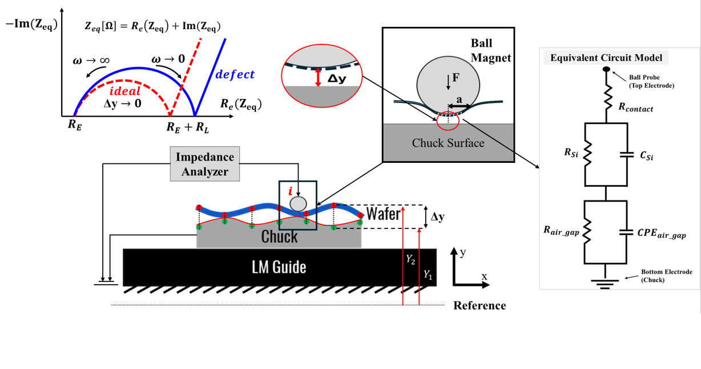
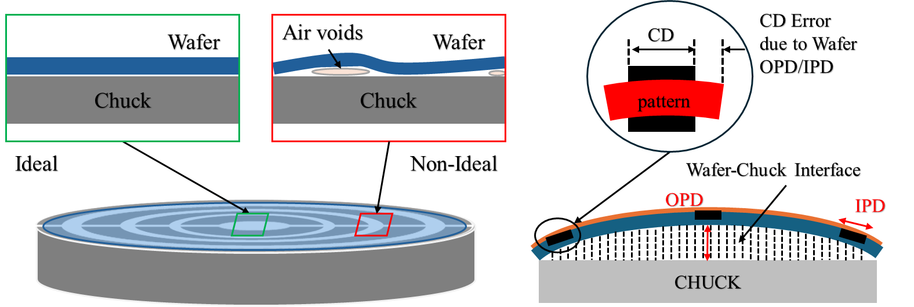
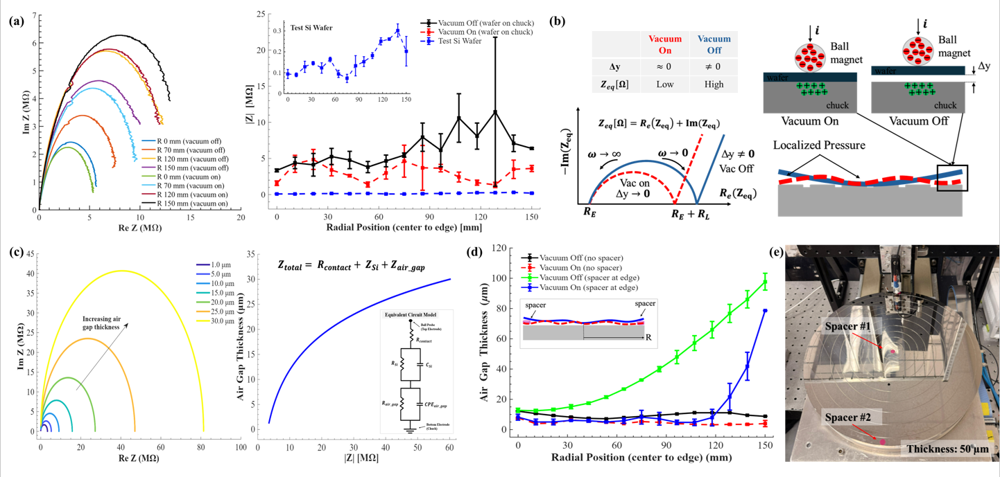
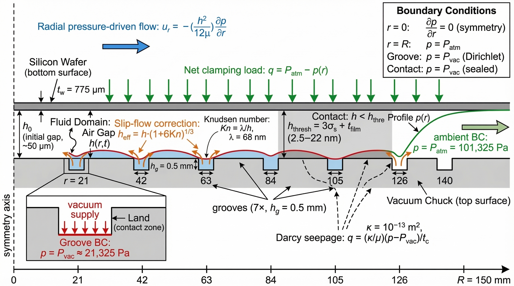
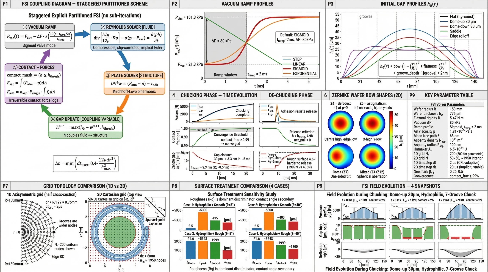
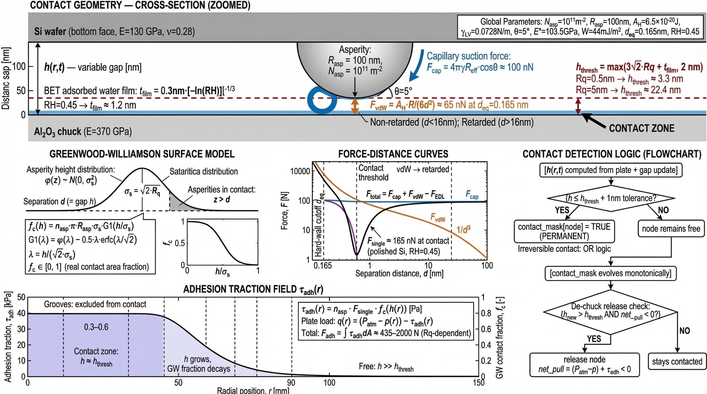
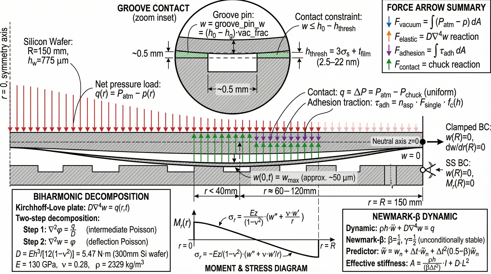
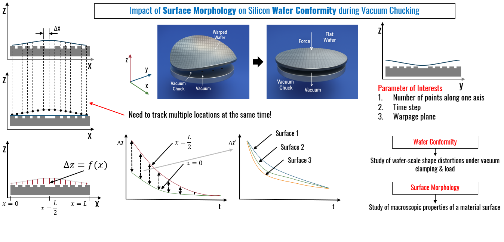
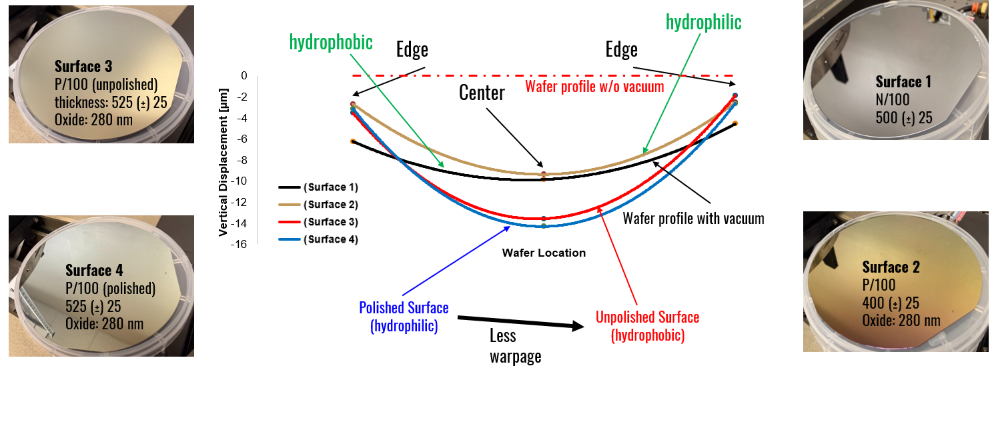

Wafer–Chuck Interface Metrology
Developing a suite of non-destructive sensing and simulation tools to characterize the microscale air gap between 300 mm silicon wafers and vacuum chucks — directly impacting overlay accuracy in advanced semiconductor lithography.
Electrochemical Impedance Spectroscopy for Wafer-Chuck Interface Characterization
Pioneered the use of EIS as a spatial metrology tool for the wafer-chuck interface. A ball-ended magnetic probe scans the wafer surface while the nickel-plated ceramic chuck acts as the bottom electrode, forming a capacitive stack: probe → wafer → air gap → chuck. The Nyquist diagram maps spatial impedance across the wafer, fingerprinting air gap magnitude, chuck damage, and vacuum state.
Series model: Z_total = Z_probe + Z_wafer + Z_gap + Z_chuck
Spacer validation: +25 MΩ per 50 µm gap layer




NIR Fabry-Pérot Reflection Spectroscopy for Air Gap Measurement
Developed a 1064 nm NIR reflection spectroscopy system that exploits silicon's transparency in the near-infrared to directly measure the air gap between the wafer's bottom surface and the chuck top. The gap forms a Fabry-Pérot cavity whose interference fringes encode thickness — extracted via FFT of the reflection spectrum.
FFT peak frequency → gap thickness h(r)
Resolution: Δh ≈ λ²/(2·Δλ) → micrometer-scale sensitivity
Cross-validated with Lion Precision CPL190 (2.8 mV/µm)

Multi-physics FSI Simulation Suite for Transient Wafer Chucking
Built a complete fluid-structure interaction (FSI) simulation suite in Python from scratch — coupling compressible Reynolds lubrication theory with Kirchhoff-Love plate mechanics to predict the transient conformity of a 300 mm wafer on grooved and porous vacuum chucks. Both 1D (radially symmetric) and full 2D solvers implemented with Newmark-β time integration.
Plate bending: D·∇⁴w = q(r,t), D = Eh³/[12(1−ν²)]
Gap dynamics: h(r,t) = h₀(r) − w(r,t)
Contact: Greenwood-Williamson (GW) asperity model
Slip-flow: Fukui-Kaneko Kn correction for nanoscale gaps

Vacuum & adhesion force traces — 4 surface states

Contact fraction vs time during chucking

Grooved chuck geometry — 7 concentric vacuum rings

Surface state parametric comparison — gap & pressure profiles
Multi-Modal Dynamic Characterization: Stroboscopy, Thermography & Acoustics
Extended the characterization toolkit beyond static gap measurement into the dynamic and thermal domains. Stroboscopic vibrometry captures wafer resonance modes under vacuum; flash thermography maps contact area via thermal conductance contrast; acoustic spectroscopy detects vacuum transient events.

Simulated squeeze-film pressure fields — inner vs outer port modes

2D contact area maps — inner, outer, all-port vacuum modes


Non-Destructive Bonded Wafer Quality Assessment by Electrochemical Impedance Spectroscopy
Extended the EIS metrology framework from the wafer-chuck interface to the inspection of hybrid-bonded wafer stacks — a critical need as 3D IC packaging (SiCN-SiCN, Cu-Cu direct bonding) becomes the dominant interconnect technology. Samsung-provided SiCN fusion-bonded 300 mm wafer pairs were mapped using a 37-point polar grid and 7×7 grid, revealing spatial bonding quality with sub-MΩ sensitivity. Presented at the Texas Semiconductor Manufacturers (TSM) Annual Meeting 2026.
Bonding layer: modeled as parallel R_bond ∥ C_bond (CPE element)
Well-bonded: R_bond ≈ 622 kΩ (matched to theory)
Defective / void region: R_bond → 2–3 MΩ (impedance rise)
Post-anneal uniformity: σ reduces from 1.18 MΩ → 0.10 MΩ